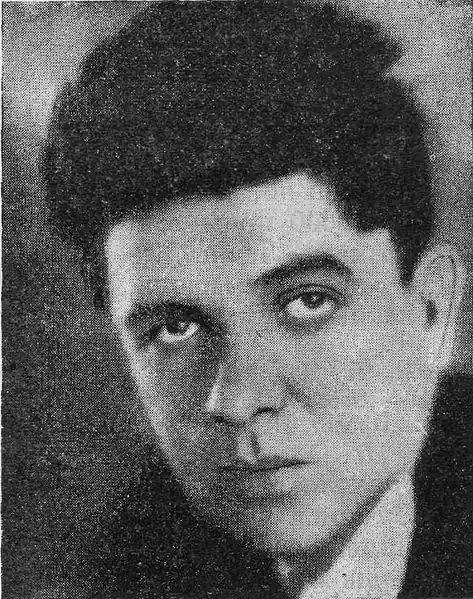
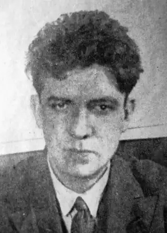
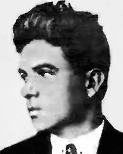

Гео Шкурупій (1903-1937)
Народився Гео (Георгій) Данилович Шкурупій 20 квітня 1903 року в м. Бендерах. Дитинство провів на Поділлі. Мати вчителювала, батько був залізничним машиністом. Закінчивши Другу Київську класичну гімназію (1920), вступив на медичний факультет Київського університету, де провчився лише рік. Згодом 2 місяці провів в Інституті зовнішніх зносин. Служив на залізниці, працював редактором і сценаристом кінофабрики, співпрацював з редакцією газети "Більшовик".
1920 р. Гео Шкурупій дебютував у літературно-мистецькому альманаху "Гроно" прозовим твором "Ми". Захоплений авангардним мистецтвом, письменник виступає з теоретичними статтями про футуризм, бере участь у літературних дискусіях. Перші збірки його поезій — "Психотези. Вітрина третя" (1922) та "Барабан. Вітрина друга" (1923), написані в стилістиці футуристичної поетики. У них переважає суспільно-політична тематика, що в добу революційної романтики позитивно сприймалося читачами. Проте захоплення футуризмом минуло у Шкурупія досить швидко. Вже 1924 року він висловлюється за об'єднання своєї організації з "Гартом", підтримує групи М.Ялового та О.Слісаренка, які відійшли від угрупування М.Семенка. 1925 року виходить його збірка "Жарини слів", яка засвідчила, що "футуристична бравада дедалі більше обертається неоромантизмом — з його дивною сумішшю лірики, сарказму та відблиском трагічного". Того ж року Г.Шкурупій дебютує у якості прозаїка. Його книгу гостросюжетних оповідань "Переможець дракона" О.Білецький назвав цікавим явищем в нашій белетристиці: "збірник розмаїтий, талановитий", хоча надміру залітературений. Інші збірки оповідань: "Пригоди машиніста Хорна" (1925), "Монгольські оповідання" (1930). Збірки віршів: "Море" (1927), "Для друзів-поетів — сучасників вічності" (1929), поема "Зима 1930 року" (1934); романи: "Двері в день" (1929), "Жанна-Батальйонерка" (1930), "Міс Андрієна" (1934). Розрив Шкурупія з футуризмом виявився нетривалим. У 1927 році він повертається до авангардного футуризму ще "запеклішим футуристом", аніж колись був. 1930 року Г.Шкурупій очолює київську філію "Нової Генерації" та стає редактором її друкованого органу — "Авангарду-альманаху пролетарських митців Н.Г." (вийшло два числа). На сторінках цього журналу вперше було надруковано кіносценарій О.Довженка "Земля", репортаж О.Влизька "Поїзди їдуть на Берлін", вірші І.Маловічка, П.Мельника, Ю.Палійчука, статті К.Малевича, М.Умакова та ін. У творах Шкурупія виразно видно прихильність до генеральної лінії партії, але... це твори не так лівого письменника, як патріота України, у душі якого живе гордість і біль за свою вітчизну, якийсь непереможний дух модернізації і прагнення наблизити українську літературу до "західноєвропейського і американського" рівня. Саме цього йому й не подарували. 3 грудня 1934 року його заарештовано за звинуваченням у приналежності до "київської терористичної організації ОУН". По справі Г.Шкурупія було проведено два судових засідання військового трибуналу на яких він категорично заперечував висунуті звинувачення, також подав судові письмову заяву-скаргу на неправомірні методи слідства. В ній, зокрема, говорилося: "15/1-35 року я подав заяву на ім'я слідчого НКВС т. Грушевського із вказівкою на неправильний запис моїх показань із вимогою їх виправити і долучити мою заяву до моєї справи. Але цього не було виконано. Тому прошу суд звернути увагу на це тепер. Показання щодо моїх розмов із знайомими мені письменниками (…) записані неправильно. Вони зредаговані, заповнені за думкою слідчого т. Гринера, записані так, як йому хотілося, і не відповідають дійсності. Мої бесіди названі націоналістичними, як і мої настрої. Насправді ж я вказував слідчому, що бесіди були на літературні, історичні і побутові теми. Незважаючи на неправильний запис показань слідчим, вони підписані мною через такі обставини. Протягом усього періоду слідства і, особливо під час допитів, я був підданий слідчим жахливому моральному тискові… Крім того, сильний біль у шлунку, оскільки в мене виразка, і вкрай пригнічений стан від погроз слідчого спричинилися до стану повного отупіння, за якого я вже нічого не тямив. Слідчий користувався моїм станом, примушував підписувати показання, доводячи мене до істерики. Тому прошу вважати ці мої показання недійсними, оскільки фактично вони не мої, а складені за думкою і бажанням слідчого". Після першого суду справу було повернуто на додаткове розслідування. На другому судовому засіданні військового трибуналу Шкурупій знову доводить свою невинність і конкретними аргументами намагається спростувати звинувачення. Проте радянський "найсправедливіший у світі суд" виніс вирок: 10 років ув'язнення у виправно-трудових таборах з подальшим трирічним ураженням у політичних правах і конфіскація майна. Дружину Варвару Базлс із сином Георгієм як родину ворога народу виселили з Києва. Г.Шкурупій відбував покарання в Соловецькій тюрмі. 25 листопада 1937 р. "особлива трійка" його справу переглянула й винесла новий вирок: розстріл. Вирок виконано 8 грудня 1937 р., що засвідчено відповідним актом. Твори: Двері в день (К., 1968);